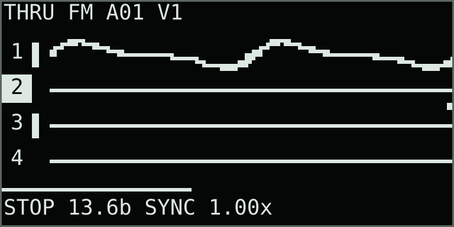
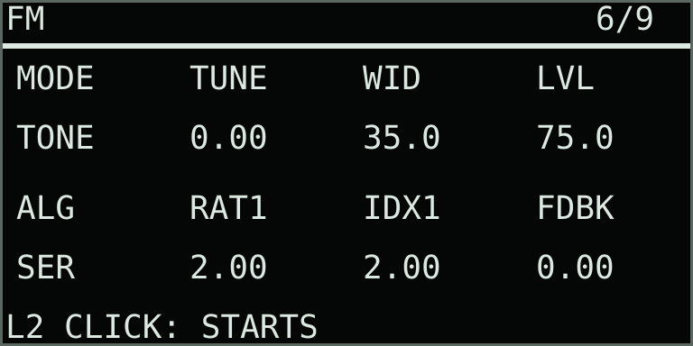
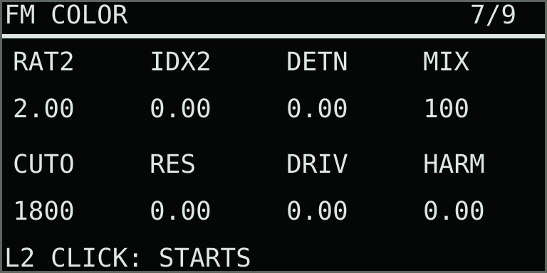
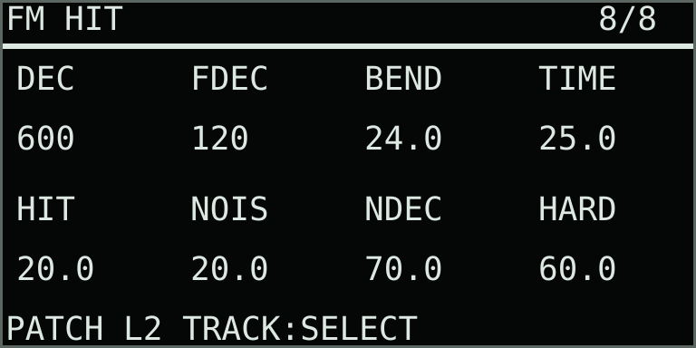

Playback engine 18 of 18
FM
Play tonal and percussive frequency-modulation sounds directly from the keys. Four synth patches take the place of sample lanes, so stack scanning blends different FM timbres.
Play and select patches
Choose ALG FM. Notes set the carrier pitch. Track buttons 1–4 select the patch to edit; stack position and scan rate move the sounding voices through those patches. Each note has its own phases and drum envelopes. The waveform view shows live audio scopes, retaining the last scope after release. Samples already in the lanes remain stored for use by sample engines. POS, FLD, SPD and JOIN are unavailable in FM.

Parameter pages
Knobs 1–4 form the top row, 5–8 the bottom row. These three pages edit the selected Track’s patch. Squares indicate unavailable controls.
FM

| Knob | Display | Range | What it controls |
|---|---|---|---|
| 1 | MODE | TONE / DRUM | FM Articulation. TONE sustains through the shared Amp Envelope. DRUM adds internal body, FM, pitch, noise and impact envelopes. MODE is adopted by the next note. |
| 2 | TUNE | -48–48 | FM Transpose. Pitch offset in semitones, added to the played note. |
| 3 | WID | 0–100 | FM Stereo Width. Width of the detuned operators and percussion noise. Zero gives identical left and right outputs. |
| 4 | LVL | 0–100 | FM Level. Patch volume before the part mixer. |
| 5 | ALG | 2OP / SER / PAR / RING | FM Routing. 2OP uses one modulator; SER puts the second modulator into the first; PAR sends both to the carrier; RING uses the second to modulate amplitude. Live routing changes crossfade. |
| 6 | RAT1 | 0.125–32 | Modulator 1 Ratio. Frequency of the first modulator relative to the carrier. Integer ratios tend toward harmonic spectra; fractional ratios introduce inharmonic components. |
| 7 | IDX1 | 0–12 | Modulator 1 Index. Depth of the first modulation in radians. Higher values add sidebands and brightness. |
| 8 | FDBK | 0–90 | FM Feedback. Feed the first modulator back into itself for denser, rougher spectra. |
FM COLOR

| Knob | Display | Range | What it controls |
|---|---|---|---|
| 1 | RAT2 | 0.125–32 | Modulator 2 Ratio. Frequency ratio of the second operator. Available in SER, PAR and RING. |
| 2 | IDX2 | 0–12 | Modulator 2 Index. Depth of the second operator; in RING it controls the ring-modulation amount. Unavailable in 2OP. |
| 3 | DETN | 0–30 | FM Stereo Detune. Pitch separation in cents. WID controls how much of that separation reaches the stereo output. |
| 4 | MIX | 0–100 | FM Wet Mix. Blend the unmodulated sine carrier with the routed FM signal. |
| 5 | CUTO | 20–20000 | FM Filter Cutoff. Low-pass cutoff in Hz, after the operators. |
| 6 | RES | 0–85 | FM Filter Resonance. Emphasize frequencies around the cutoff. |
| 7 | DRIV | 0–100 | FM Drive. Rounded saturation after filtering. |
| 8 | □ | — | Reserved. |
FM HIT

| Knob | Display | Range | What it controls |
|---|---|---|---|
| 1 | DEC | 10–8000 ms | FM Drum Decay. Internal body decay in milliseconds, even while a key remains held. |
| 2 | FDEC | 2–4000 ms | FM Index Decay. Time for modulation depth and feedback to decay toward a simpler carrier tone. |
| 3 | BEND | -48–48 | FM Pitch Sweep. Initial pitch offset in semitones, settling toward the played note plus TUNE. |
| 4 | TIME | 1–2000 ms | FM Pitch Sweep Time. Settling time for BEND. Unavailable when BEND is zero. |
| 5 | HIT | 0–100 | FM Impact. Short high-frequency noise attack. Edits change the remaining impact without retriggering it. |
| 6 | NOIS | 0–100 | FM Noise Body. Low-pass noise alongside the drum body. |
| 7 | NDEC | 1–4000 ms | FM Noise Decay. Noise-body decay in milliseconds. Unavailable with NOIS at zero. |
| 8 | HARD | 0–100 | FM Impact Hardness. Brightness and duration of the initial impact. Edits change the remaining impact; unavailable with HIT at zero. |
Starting sounds
For a rounded bass, use TONE, 2OP, RAT1 1 and IDX1 1–3. For bells, use SER or PAR with fractional RAT2 and moderate indices. For a drum, choose DRUM and play a new note: try TUNE −24, DEC 350 ms, BEND +24, TIME 25 ms, IDX1 3 and FDEC 80 ms. Increase HIT for more attack; add NOIS with a short NDEC for snare-like textures.
The engine reduces modulation depth near the upper frequency limit to control aliasing. High notes and large ratios can therefore sound simpler than lower notes. The shared Amp Envelope and Sequence DUR can shorten DRUM tails.
Capture and recall
Clips and projects store all four FM patches. Recorded knob movements retain their part and patch identity. Hold a Sequence trig, browse to FM and adjust a sound control to lock it for that trig. MODE applies to new notes; the operator, filter, level and remaining envelope rates respond while notes are sounding.
LFO destinations follow the available manual controls. MODE, ALG, HIT and HARD remain manual or trig settings. See control LFOs, sound locks and shared engine controls.